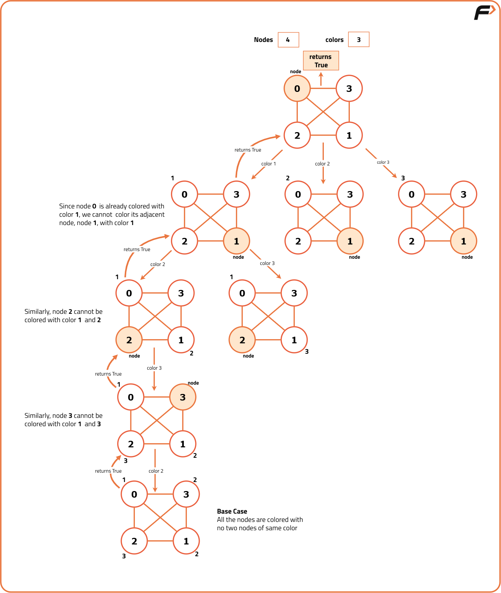

M - Coloring Problem
Problem Statement: Given an undirected graph and a number m, determine if the graph can be colored with at most m colors such that no two adjacent vertices of the graph are colored with the same color.
Examples
Example 1:
Input:
N = 4
M = 3
E = 5
Edges[] = {
(0, 1),
(1, 2),
(2, 3),
(3, 0),
(0, 2)
}
Output: 1
Explanation:
It is possible to color the given graph using 3 colors, so the answer is 1 (possible).
Example 2:
Input:
N = 3
M = 2
E = 3
Edges[] = {
(0, 1),
(1, 2),
(0, 2)
}
Output: 0
Explanation:
It is not possible to color the graph using 2 colors as it forms a triangle, which requires at least 3 colors. Hence, the answer is 0 (not possible).
Disclaimer: Here is the practice link to help you assess your knowledge better. It's highly recommend trying to solve it before looking at the solution.
Approach
Algorithm
- Try every color from 1 to m using a for loop.
- Use a function
isSafeto check if it's safe to color the current node with the current color. This function returns true if none of the adjacent nodes have the same color. - If
isSafereturns true, color the node with the current color and call the recursive function to color the next node. - If the recursive function returns true, it means the graph can be successfully colored, so return true.
- If the recursive function returns false, remove the current color from the node and try the next color.
- If all colors from 1 to m fail, return false, indicating that it is not possible to color the graph with m colors.

Code
#include<bits/stdc++.h>
using namespace std;
// Function to check if it is safe to assign a color to a node
bool isSafe(int node, int color[], bool graph[101][101], int n, int col) {
for (int k = 0; k < n; k++) {
// Check if adjacent node has the same color
if (k != node && graph[k][node] == 1 && color[k] == col) {
return false;
}
}
return true; // Safe to assign the color
}
// Recursive function to solve the coloring problem
bool solve(int node, int color[], int m, int N, bool graph[101][101]) {
// If all nodes are assigned colors, return true
if (node == N) {
return true;
}
// Try different colors for the node
for (int i = 1; i <= m; i++) {
if (isSafe(node, color, graph, N, i)) {
color[node] = i;
// Recursively check for the next node
if (solve(node + 1, color, m, N, graph)) return true;
color[node] = 0; // Backtrack if the color assignment fails
}
}
return false; // If no solution is found
}
// Function to check if graph can be colored with m colors
bool graphColoring(bool graph[101][101], int m, int N) {
int color[N] = { 0 };
// Start solving from node 0
if (solve(0, color, m, N, graph)) return true;
return false;
}
int main() {
int N = 4; // Number of nodes
int m = 3; // Maximum number of colors
bool graph[101][101];
memset(graph, false, sizeof graph);
// Create a sample graph with edges (0,1), (1,2), (2,3), (3,0), (0,2)
graph[0][1] = 1; graph[1][0] = 1;
graph[1][2] = 1; graph[2][1] = 1;
graph[2][3] = 1; graph[3][2] = 1;
graph[3][0] = 1; graph[0][3] = 1;
graph[0][2] = 1; graph[2][0] = 1;
// Output if the graph can be colored with at most m colors
cout << graphColoring(graph, m, N);
return 0;
}Complexity Analysis
Time Complexity: O(m^N), where m is the number of colors and N is the number of nodes in the graph. This is because we try to color each node with m different colors, leading to an exponential time complexity in the worst case.
Space Complexity: O(N), where N is the number of nodes in the graph. This is due to the recursion stack and the color array used to store the colors assigned to each node.